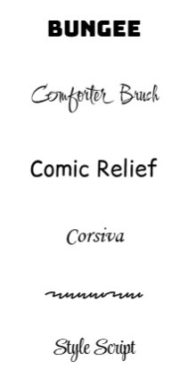
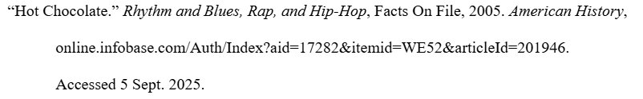
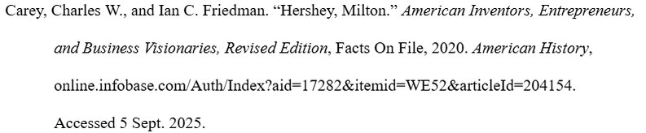
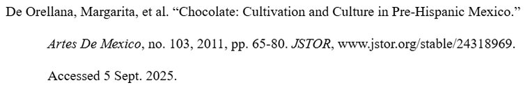
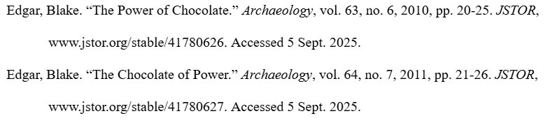
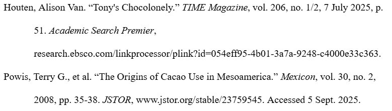
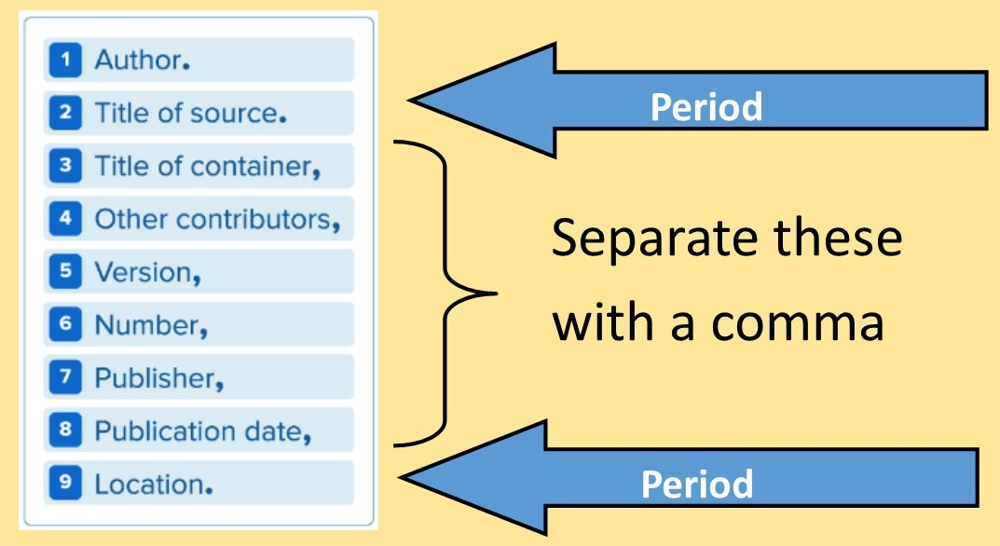
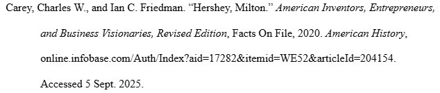

What is MLA?
The Modern Language Association (MLA) is a professional organization that supports the study and teaching of languages and literature. MLA also refers to the style guide it publishes, which provides rules for formatting and citing sources in academic writing, especially in the humanities. Most classes at West Essex High School require the use of MLA format in academic work.
MLA format helps you organize your writing so it looks clean and professional. It also encourages you to develop important habits like providing evidence for your arguments and giving credit to others when you use their work.
MLA is guided by three principles:
- Cite simple traits shared by most works.
- Remember that there is more than one way to cite the same source.
- Make your documentation useful to readers
The MLA Handbook is currently in its ninth edition, which was first published in 2021. This edition includes updated guidelines on grammar, punctuation, inclusive language, and detailed instructions for citing various sources. While you can always consult the handbook if you're deeply invested in the intricacies of MLA, this site aspires to provide you with what I'd consider essential knowledge about the format.
Why do we cite?
Citations perform a number of noble functions that we can break down with the help of three As: accountability, accreditation, and affirmation.
Accountability
Proper citation allows any reader to trace your evidence to its roots, proving the information came from credible references and supporting your original arguments. Citations ease the burden of fact-checking original research and vetting secondhand knowledge.
Accreditation
Acknowledging one's intellectual influences and reference points isn't merely polite—it also prevents ethical issues! Properly documenting sources ensures credit is given to original authors, preventing plagiarism and maintaining academic integrity. (Remember: you signed an agreement!)
Affirmation
Ample citations reflect time and effort invested in thorough research. They stand as evidence of your own expertise.
NoodleTools
NoodleTools is web-based software that assists users with every step of the research process on any device in any location. It helps with organizing and analyzing sources; taking notes and producing outlines; and creating in-text citations and reference lists. More specifically:
- It aids in the generation of accurate MLA, APA, and Chicago-style citations. It can export these citations in a variety of formats, including both Google Docs and Microsoft Word.
- It supports notetaking, outlining, project planning, and archiving source materials.
- It offers collaborative features. Students can work together on projects and teachers can offer guidance along the way.
I strongly encourage you to use NoodleTools for any academic research task you undertake at West Essex High School.
That said, NoodleTools is a tool, not an infallible research assistant. Be sure to double- and triple-check your work, as the materials NoodleTools produces are only as reliable as the data you feed it.
Further Reading
For Further Reference
- Columbia College's MLA 9 LibGuideI'm not the only game in town! A comprehensive overview of the latest MLA standards and procedures.
- Florida State College at Jacksonville's MLA LibGuideA concise overview of MLA basics. Most useful as a refresher.
- Purdue University's Online Writing Lab (OWL)A longstanding resource providing a comprehensive overview of the writing process and MLA style, specifically.
Just for Fun
- Ask the MLAFAQs and other clarification straight from the horse's mouth.
- Citation GameGauge your MLA savvy! It's (probably) really fun!
Useful Tools
- Interactive Practice TemplateFor building citations by hand.
- North Carolina State University Libraries' Citation BuilderA step-by-step interactive citation generator.
- Zotero's Z-BibA free citation generator from the makers of Zotero, an open-source reference management tool.
Looking for APA?
Need APA instead?
This guide's sibling, Citation Station, covers American Psychological Association (APA) format with the same structure and tools.
The Essentials
Generally, in MLA format, you...
- ...use 8.5" x 11" white paper with one-inch margins.
- ...use a legible 12-point font (such as Times New Roman).
- ...double-space text throughout.
- ...include a header starting with your last name that consecutively numbers all pages in the upper right-hand corner, flush with the right margin.
- ...include your name, instructor's name, course name and number, and date in the upper left corner of the first page.
- ...center the title of your paper below the above information. Render the title using Title Case (standard capitalization).
- ...start each paragraph with a half-inch indentation (one tab) from the left margin.
- ...use parenthetical citations to acknowledge sources within the text. Follow the author-page format for in-text citations (e.g. Smith 23).
- ...include a Works Cited list at the end of your paper on a separate page.
How does it look?
Good-Lookin' Example Graphics
Each topic below shows an animated walkthrough of how to do it in Google Docs. Click "the finished result" under any animation to compare your work against a labeled example.
How do I resize margins?
You can do it! In the menu bar, select "File," then "Page setup." Ensure you've enable the page (rather than pageless) view, then configure your size, background color, and margins as needed.
How do I select a typeface?
You probably already know this, but all of your font settings are in the toolbar directly above your work. Select the font you want from the main dropdown, then adjust size in the box next to it (you can use the plus and minus buttons, select an option from the dropdown, or type in a number). Make sure your text isn't stylized (with italics or underlining) as you go!
What makes a typeface/font "legible"?
Good question! The silly answer is legible typefaces are easy to read. To be more specific, a legible typeface has:
- Clear distinctions between CAPITAL and lowercase letters (A and a shouldn't be the same shape in different sizes)
- Obvious differences between letters with counters (a counter is open area enclosed by a letter; think o, e, c)
- Medium weight (lines aren't too thick or too thin)
- Adequate spacing (letters and lines aren't squished together or too far apart)
- Unique shapes (to prevent misreading potentially confusing characters like i, l, and 1)
All that said, your teacher's preferences as explained in an assignment description always take priority over the technicalities of MLA format.
Some Legible Typefaces
Arial
Courier New
Georgia
Times New Roman
Verdana
Some Not-so-legible Typefaces

How do I adjust spacing?
Adjusting spacing is easy! Select "Format" from the menu bar, hover over "Line & paragraph spacing," then select "Double."
How do I create a header?
This is a bit more complicated than it once was! Select "Insert" from the menu bar, hover over "Page elements," and select "Header." Next, you can either return to "Insert" to add page numbers or you can select the "Options" dropdown in the bottom-right corner of your header. Don't forget to add your last name before the page count and align everything flush-right!
How do I format my heading?
Um... You just type it in: your name, your teacher's name, the course name, and the date, each on their own line, all double-spaced.
How do I stylize my title?
Write it in title case! Title case means capitalizing the first letter of each significant word in a title. Conjunctions (like "and," "or," and "but"), articles (like "a" and "the"), and prepositions (like "at," "in," and "on") are rendered in lowercase unless they come at the beginning or end of the title. Don't forget to center-align your title!
Warning!
You may notice a formatting option for title case in Google Docs. Google Docs is not good at properly formatting titles. It will capitalize Every Single Word In Your Title, Including A Word Or Two Or Three That Shouldn't Be Capitalized (like in, a, and or)!
How should I indent my paper?
The usual way! Each new paragraph should begin with a half-inch (0.5") indentation. You can use the tab button on your keyboard, the "Increase indent" button in the toolbar, or the short code ctrl+]. Additional options are available in the menu bar under "Format," then "Align & indent."
How do I cite sources in my text?
MLA style calls for parenthetical in-text citations at the end of a sentence EVERY SINGLE TIME you quote from, engage with, or share an idea that originated in an outside source. If the words aren't yours, CITE IT! If the idea is not your own, CITE IT! If you're not sure what to do, EMAIL THE LIBRARIAN OR CITE IT!
A full page of this site dedicated to in-text citation basics, including an overview of common questions and stumbling blocks, but the fundamentals are simple. MLA follows author-page format; thus, every time you use another person's work, you acknowledge it by including their last name and the applicable page number(s) (if their work contains any!) in parentheses at the end of your sentence before final punctuation.
For example, if I were quoting from author Ishmael Reed's book Mumbo Jumbo, my citation might look like this:
As every aspiring swashbuckler must concede, "[s]word fighting only interests the kids who attend the matinees" (Reed 62).
Any time an in-text citation appears in your work, a corresponding full reference must appear on your Works Cited page, which is the subject of another dedicated section in this site!
How should I provide a list of resources I used?
As mentioned, all in-text citations must correspond to a full reference on a Works Cited page at the end of your paper. While the particulars are reviewed in another dedicated section of this site, it's worth noting that the list...
- ...should be placed on a fresh, clean page at the end of your paper.
- ...must begin with a centered heading reading "Works Cited" without any stylization.
- ...like the rest of the paper, is double-spaced.
- ...contains entries formatted with a hanging indent.
For example, my Ishmael Reed citation from before would look like this:
Reed, Ishmael. Mumbo Jumbo. Open Road Media, 2013.
Citation Basics
MLA 9 follows the author-page method of in-text citation. That means...
...you need to provide the author's last name and the page number(s) of the source you are quoting or paraphrasing within parentheses at the end of your sentence (Example #).
Chocolate can also be used as a hair-styling product (Bartley 27).
...if you mention an author's name in your sentence, you don't need to repeat it in parentheses. Just include the page number(s) after their name.
As Bartley explains, chocolate can also be used as a hair-styling product (27).
...if you quote directly from a source, use “quotation marks around the words you copied” and include the page number(s) after them (#).
As Bartley explains, "[t]here's nothing I love more than smearing a big, hot gob of HERSHEY'S Chocolate Syrup in a counterclockwise motion starting from the middle of my pate at roughly 4:00am every third Tuesday provided the moon's in a waning gibbous phase" (27).
...if you paraphrase or summarize a source, don't use quotation marks but still include the page number(s) (#).
As Bartley demonstrates, there are some people whose astrological and follicular predilections depend upon the wonders of cacao (27).
...each in-text citation must correspond to a full reference in your Works Cited page.
Bartley, B. G. D. The Genetic Diversity of Cacao and Its Utilization. CABI, 2005.
What if a source has no author?
When a source has no author, use a shortened version of its title instead. If the title is already short, include the whole thing.
Use quotation marks for article or chapter titles and italics for book or website titles.
For example, this full reference...

...yields this in-text citation:
("Hot Chocolate").
What if a source has two authors?
When a source has two authors, name both of them separated by "and".
For example, this full reference...

...yields this in-text citation:
(Carey and Friedman).
What if a source has more than two authors?
When a source has more than two authors, name only the first one followed by "et al." (which is an abbreviation of the Latin phrases et alii, et aliae, or et alia, meaning 'and others'; since it's an abbreviation, don't forget the period!).
For example, this full reference...

...yields this in-text citation:
(De Orellana et al. 72).
What if a source has no page numbers?
When a source has no page numbers, leave it blank! Don't fabricate numeration.
For example, our full reference from before...
...yields this in-text citation...
("Hot Chocolate").
...since it's a digital source with no page numbers.
About Long Quotes
Long quotes, also called block quotes, ought to be reserved for imparting essential, in-depth information as it appears in its original context. You’d probably struggle to justify including a block quote in a short paper. That said, if you simply must:
When you cite more than four lines of prose or three lines of poetry, set it on a new line indented 0.5 inches from the left margin.
- Do not use quotation marks.
- Introduce the block quote with your own words and a colon, and then provide an MLA in-text citation after the final punctuation mark.
- If you are quoting two or more paragraphs, indent the first line of each paragraph an additional .25 inches.
But, seriously, unless there’s no other way to analyze a source don’t use block quotes in a short paper. (Anything less than 10 pages is short.)
Example
Milton Hershey’s introduction of milk chocolate revolutionized the entire industry, as milk chocolate is more than just a sweet indulgence. Indeed, it represents a cultural moment when comfort and joy were made widely accessible through a simple recipe. Hershey himself evokes this sense of wonder and destiny in recalling the invention, describing it with heartfelt imagery:
The day I first heard that milk and chocolate had been married together, I’ll admit, my heart melted faster than a candy bar on a July afternoon. To me, it wasn’t just an invention—it was destiny, the sweet union of two simple ingredients that could comfort the world one bite at a time. I thought: if Switzerland could stir joy into a cup, then surely America could wrap it in a bar and share it with every pocket, purse, and lunch pail from coast to coast. Milk chocolate wasn’t merely a recipe—it was a love letter written in sugar, a promise that happiness could be held in your hand and tasted on your tongue whenever life seemed bitter. (17)
This reflection not only portrays the personal delight tied to milk chocolate but also suggests its larger role as a symbol of happiness, portability, and everyday pleasure.
What if you cite multiple sources by the same author or authors with the same surname throughout your work?
When you cite multiple sources by the same author or authors with the same surname throughout your work, include shortened titles after the author's name (with a comma!).
For example, a sentence containing information the first entry in this pair of full references...

...would terminate with this in-text citation:
(Edgar, "Power of Chocolate" 22).
What if you cite multiple sources by the same author in one sentence?
What if you cite multiple sources by the same author or authors with the same surname in the same sentence?
When you cite multiple sources by the same author or authors with the same surname in the same sentence, include shortened titles after the author's name (with a comma!) and separate each entry with a semicolon.
For example, a sentence containing information from this pair of full references...
...would terminate with this in-text citation:
(Edgar, "Power of Chocolate" 22; Edgar, "Chocolate of Power" 23).
What if you cite multiple sources by different authors in one sentence?
What if you cite multiple sources by different authors in the same sentence?
When you cite multiple sources by different authors in the same sentence, separate each entry with a semicolon.
For example, a sentence containing information from this pair of full references...

...would terminate with this in-text citation:
(Houten 51; Powis 37).
The Essentials
Your Works Cited page contains a full reference for every in-text citation that appears in your work. To create a Works Cited page, you...
- ...begin your Works Cited page on a new sheet at the end of your paper.
- ...label the page Works Cited. Center these words at the top of the page.
- ...double space all citations. Do not skip spaces between entries.
- ...indent the second and subsequent lines of citations by 0.5" (one tab) to create a hanging indent.
- ...list page numbers of sources efficiently (e.g. 127-48, not 127-148).
- ...alphabetize entries by the author’s last name, using the letter-by-letter system.
- ...if an author is unknown, alphabetize the entry by the title of the work.
- ...use italics for all titles of books, magazines, films, etc.
- ...use quotation marks for titles of articles, chapters, and web pages.
You can rely on citation management software (like NoodleTools) or a comprehensive MLA format guide to walk you through the specifics of properly citing your sources. That said, every entry on your Works Cited page will conform to the formula below. Your goal is to provide the exact details needed to find and consult the sources you used, facilitating further research and/or fact-checking.
MLA 9, like MLA 8, builds citations using nine core elements. They appear in a specific order with specific punctuation for each entry on your Works Cited page. To wit:

Core Elements
The MLA insists that 9 core elements are necessary in a Works Cited entry. Follow this list (including punctuation) to place the elements of a citation in the correct order. It’s okay if you can’t find every component, but strive to include as many as you can!
- Author.
- Title of Source.
- Title of Container,
- Other contributors,
- Version,
- Number,
- Publisher,
- Publication date,
- Location.
For example, this database citation...

...contains the following elements:
- Carey, Charles W., and Ian C. Friedman. (author)
- “Hershey, Milton.” (title of source)
- American Inventors, Entrepreneurs, and Business Visionaries, Revised Edition, (title of container)
- No other contributors
- No version
- No number
- Facts On File, (publisher)
- 2020. (publication date)
- American History, online.infobase.com/Auth/Index?aid=17282&itemid=WE52&articleId=204154. (location)
Supplemental Elements
The MLA also recommends including 5 supplemental elements in a Works Cited entry. These elements are extremely helpful, but aren’t mandatory. Different instructors have different preferences as to their use. I'd suggest striving to include them where you can.
- Original Publication Date,
- City of Publication,
- URL.
- DOI.
- Date of access.
For example, this database citation...
...contains some of the optional elements:
- (nope!)
- (nope!)
- online.infobase.com/Auth/Index?aid=17282&itemid=WE52&articleId=204154.
- (nope!)
- Accessed 5 Sept. 2025.
The URL or DOI grants your reader easy access to your source. The additional publication information and date of access can help account for discrepancies between what you cite and what a source actually says.
Hanging Indent
To create a hanging indent in Google Docs, select all the relevant text, then select "Format," "Align & Indent," and "Indentation options" in your menu bar. Below the "Special indent" option, select "Hanging" from the dropdown on the left and manually specify one-half-inch (0.5) on the right.
Citation Generator
Choose a source type, fill in the fields you have, and the citation builds itself below. Copy it into your Works Cited list, then format it with a hanging indent.
Seen in person at a museum
Viewed online (fill these instead)
This tool covers the most common sources. For anything unusual, a multivolume set, an interview, a film, a source inside another source, consult the MLA Interactive Practice Template.
Citing Generative AI
MLA has issued specific guidance for citing generative artificial intelligence tools such as large language models. The full handout lives in a shared Google Doc: